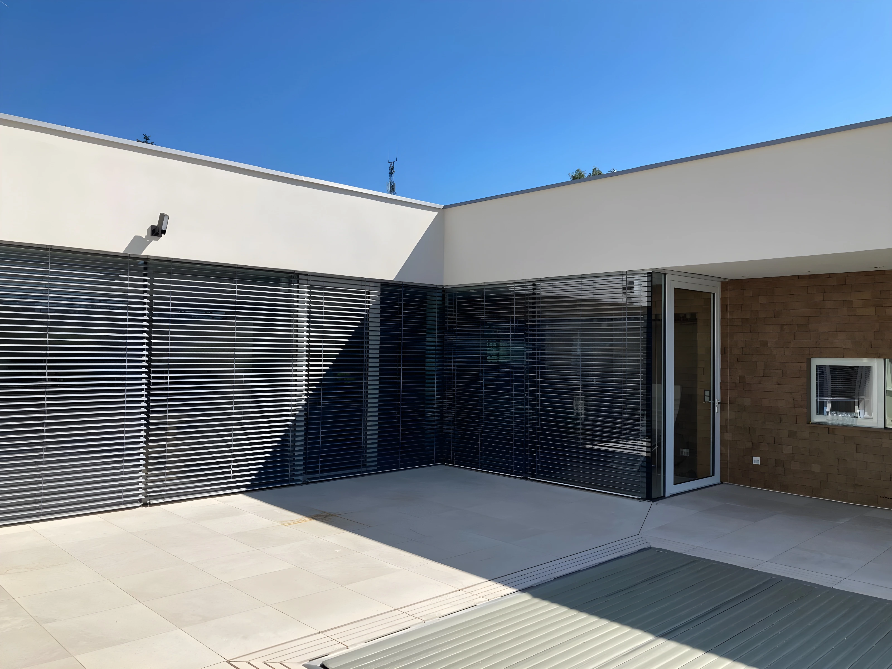

Zsaluziák
A zsaluziák korszerű, lamellás kialakítású kültéri árnyékolók,
amelyek precíz fény- és hőszabályozást tesznek lehetővé nagy
üvegfelületeken is. A lamellák dőlésszöge fokozatmentesen állítható,
így a természetes fény mennyisége és a belső hőmérséklet optimálisan
szabályozható, miközben a kilátás is megmarad.
A zsaluziák
rendelhetők kézi vagy motoros mozgatással, sín- vagy sodronyos
vezetési rendszerrel, valamint számos szín- és lamellatípusban.
Ideális választás modern családi házak, irodák és középületek
homlokzatára, ahol a funkcionalitás mellett a letisztult, esztétikus
megjelenés is fontos szempont.
A zsaluziák előnyei
- Kiváló fény- és hőszabályozás, akár teljes sötétítés
- Modern, esztétikus megjelenés minden homlokzaton
- Motoros vagy kézi vezérlés, okosotthon integráció
- Tartós, időjárásálló alumínium lamellák
- Energiatakarékosság: nyáron hűvös, télen meleg
- Sokféle szín, lamellaforma (C, S, Z)
- Családi házak, irodák, modern épületek ideális árnyékolója